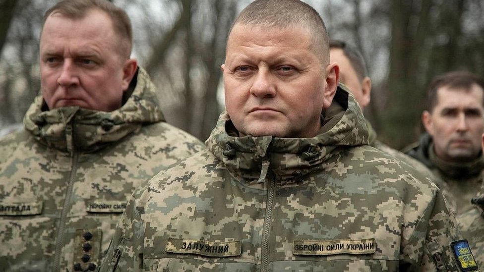

Стаття
Зеленський погодив призначення Залужного послом у Британії – МЗС
Президент Володимир Зеленський погодив призначення колишнього головнокомандувача Збройних сил Валерія Залужного послов у Великій Британії – про це заявило Міністерство закордонних справ 7 березня.
«Президент України погодив кандидатуру Валерія Залужного на посаду Надзвичайного і Повноважного Посла України в Сполученому Королівстві Великої Британії та Північної Ірландії. Міністерство закордонних справ
України спрямувало британській стороні відповідний запит на агреман», – йдеться в повідомленні.
Сам Залужний, Зеленський, а також Міністерство закордонних справ Великої Британії наразі не коментували призначення.

О липня 2023 року послом України в Лондоні був Вадим Пристайко.8 лютого президент України Володимир Зеленський і головнокомандувач ЗСУ Валерій Залужний провели зустріч, за підсумками якої обидва заявили про необхідність змін у ЗСУ.
Згодом Володимир Зеленський призначив генерал-полковника Олександра Сирського новим головнокомандувачем Збройних сил України – замість Валерія Залужного, якому голова держави подякував «за два роки захисту».
Після цього Зеленський присвоїв Валерію Залужному звання Героя України.
Валерій Залужний після звільнення наголосив, що «для нього велика честь отримати звання Героя України», і сказав, що «з відданістю і вдячністю служу і служитиму українському народові».